Algorithm
Aside from using inversion to construct a reciprocal of a given linear measure I have identified one inversion with respect to a circle-based problem solving algorithm:
- choose a convenient center of inversion
- choose a convenient radius of inversion
- choose a convenient power of inversion
- invert the original object(s) with respect to the circle of inversion found in the previous steps
- solve a (presumably easier) problem in terms of the inverse object(s)
- using the preservation of angles and tangent points and other basic properties of inversion convert the solution in terms of the inverse object(s) obtained in the previous step into the solution in terms of the original object(s)
Tangent Circles
Problem 1
Construct all circles which are tangent to a given circle \(q(Q, R)\), pass through a given point \(P\) and have their centers located on a straight line passing through \(P\) and \(Q\)
Two interesting cases in this problem are 1) the given point \(P\) is outside \(q(Q, R)\) and 2) the given point \(P\) is inside \(q(Q, R)\).
Let us investigate the first case together and the second case you can do yourself.
Construct a \(Line(P, Q)\) until it intersects \(q(Q, R)\) at \(A\) and \(B\).
Center of Inversion
We know that the circles sought after must pass through \(P\). We also remember that circles passing through the center of inversion become straight lines (which are "easier" to construct). Inversely - certain straight lines become circles passing through the center of inversion. It makes sense then to pick the given point \(P\) as a center of inversion - if we somehow construct these straight lines and invert them back then we will obtain our circles.
Radius of Inversion
It does not really matter which radius of inversion we choose but in order to minimize the number of points we need to invert let us choose \(PA\) as a radius of inversion (you should also try \(PB\) as a radius of inversion):
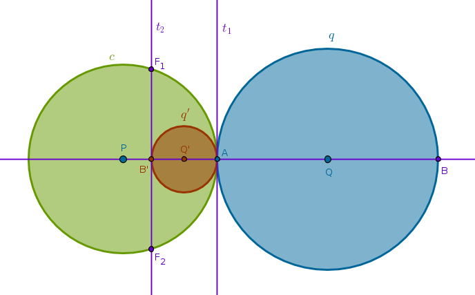Power of Inversion
It makes sense to choose a positive power of inversion.
Invert
According to ICP25 under the inversion with respect to \(c(P, PA)\) with positive power the circle \(q(Q, R)\) becomes \(q'(Q', R')\) - a circle touching \(c(P, PA)\) at \(A\) internally. Under that inversion the point \(B\) is thrown inside \(c(P, PA)\) becoming \(B'\).
Solution in Terms of Inverse Objects
The solution in terms of the inverse objects is a pair of tangents to \(q'(Q', R')\) - one at \(A\), \(t_1\), and one at \(B'\), \(t_2\), - a pair of straight lines touching the image of the given circle at two points which are also the images of the target points.
Solution in Terms of Original Objects
Just because of the way we have chosen our circle of inversion the straight line \(t_1\) is tangent to \(c\) at \(A\). From ICP12 it follows that \(t_1\) will invert into a circle passing through \(P\) and touching \(c\) at \(A\) internally and touching the given circle \(q\) at \(A\) externally.
From ICP36 we know that under inversion tangency points are preserved. If \(t_1\) and \(q'\) touch then their images will also touch. This is exactly what we want and thus the first required circle is constructed - invert \(t_1\) with respect to \(c\) with positive power.
The straight line \(t_2\) does not pass through \(P\) and intersects \(c\) at exactly two points, \(F_1\) and \(F_2\). From ICP10 it follows that \(t_2\) will invert into a circle passing through \(P\), \(F_1\), \(F_2\). To locate the center of this circle we bisect \(LineSegment(P, F_1)\).
From ICP36 we know that under inversion tangency points are preserved. If \(t_2\) and \(q'\) touch at \(B'\) then their images will also touch. But \(B'\) is the image of \(B\) so we expect the image of \(q'\) - the given circle \(q\) - and the image of \(t_2\) - the circle sought after - to touch at \(B\). This is exactly what we want and thus the second required circle is constructed - invert \(t_2\) with respect to \(c\) with positive power:
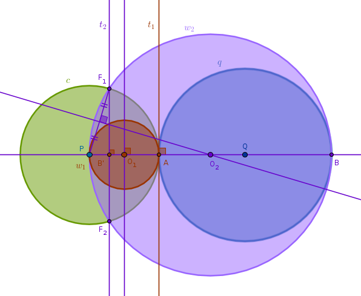Here is a full solution for the first case:
1) \(Line(P, Q)\) until it intersects \(q(Q, R)\) at \(A\) and \(B\)
2) Invert \(q\) with respect to \(c(P, PA)\) with positive power to obtain the circle \(q'\)
3) Tangent \(t_1\) to \(q'\) at \(A\)
4) Tangent \(t_2\) to \(q'\) at \(B'\)
5) Invert \(t_1\) with respect to \(c\) with positive power to obtain the circle \(w_1\) (the first solution)
6) Invert \(t_2\) with respect to \(c\) with positive power to obtain the circle \(w_2\) (the second solution).
You can now investigate the case when the given point \(P\) is inside \(q\).
Also, now that we have looked at one solution very thoroughly we will move a bit faster but you should have no trouble recognizing the algorithm outlined at the beginning of this section.
Problem 2
Construct all circles which are tangent to two given circles \(q_1(Q_1, R_1)\) and \(q_2(Q_2, R_2)\) and pass through a given point \(P\) located outside \(q_1\) and \(q_2\)
Choose \(P\) as a center and \(c(P, r)\) as a circle of inversion with positive power. Assume that one required circle, \(w_1\), is somehow constructed. Under the inversion with respect to \(c\) with positive power circles \(q_1\) and \(q_2\) become circles \(q'_1\) and \(q'_2\) (ICP29) while the circle \(w_1\) becomes a straight line \(t_1\), based on ICP15 for the drawing below.
Since \(w_1\) touches \(q_1\) and \(q_2\) and tangency points under inversion are preserved, it stands to reason that the image of \(w_1\) will touch the images of \(q_1\) and \(q_2\).
But the image of \(w_1\) is a straight line and the images of \(q_1\) and \(q_2\) are circles. Hence, \(t_1\) must be a tangent common to two circles, \(q'_1\) and \(q'_2\):
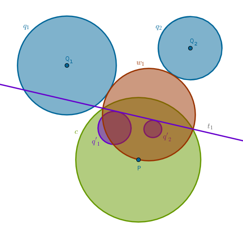How many common tangents do two circles can possibly have? Four - in the most generic case. Inverting these tangents with respect to \(c\) with positive power we locate our circles:
1) Invert the given circles \(q_1\) and \(q_2\) with respect to \(c(P, r)\) with positive power to obtain the circles \(q'_1\) and \(q'_2\)
2) Construct four tangents common to \(q'_1\) and \(q'_2\) - \(t_1\), \(t_2\), \(t_3\), \(t_4\)
3) Invert \(t_1\), \(t_2\), \(t_3\), \(t_4\) with respect to \(c(P, r)\) with positive power to obtain the four circles sought after:
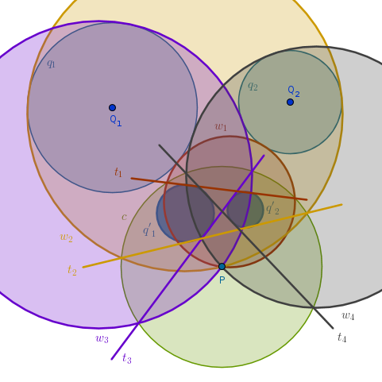In the most generic case of four solution circles one will touch both given circles externally (\(w_1\)), one will touch both circles internally (\(w_2\)), and each of the two remaining circles will touch one given circle internally while touching the remaining one externally (\(w_3\)) and vice versa (\(w_4\)).
In the drawing above we have used color and text to pair up a tangent straight line with its solution circle that touches both given circles. The sub indexes and the color match pairwise:
$$t_1, w_1$$ $$t_2, w_2$$ $$t_3, w_3$$ $$t_4, w_4$$
Problem 3
Given three circles \(q_1\), \(q_2\) and \(q_3\), which intersect at a point \(P\), construct all circles which are tangent to \(q_1\), \(q_2\) and \(q_3\)
Choose \(P\) as a center of inversion. Make the radius of inversion \(r\) such that \(c(P, r)\) intersects all three given circles. Under the inversion with respect to \(c(P, r)\) with positive power the given circles \(q_1\), \(q_2\) and \(q_3\), which pass through \(P\), will invert into the straight lines \(q'_1\), \(q'_2\) and \(q'_3\) (ICP15). Since the original circles do not touch but intersect pairwise - so will the straight lines. By intersecting these straight lines will delineate a triangle, \(\triangle LMN\) in the drawing below.
Now we can construct four circles each of which is tangent to all three straight lines - one incircle and three excircles. Inverted with respect to \(c\) with positive power these circles will preserve their points of tangency and will become the circles sought after.
In the drawing below we have constructed an incircle, \(w'_1\), and its inverse - a circle \(w_1\) that touches all three given circles internally:
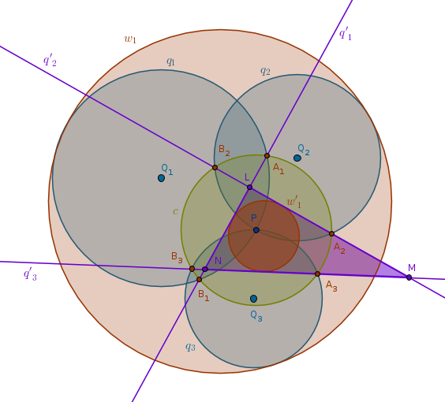A full solution then is:
1) Invert the given circles \(q_1\), \(q_2\) and \(q_3\) with respect to \(c(P, r)\) with positive power to obtain the straight lines \(q'_1\), \(q'_2\) and \(q'_3\) which will delineate a triangle
2) Construct four circles each of which is tangent to all three straight lines \(q'_1\), \(q'_2\) and \(q'_3\) - \(w_1\), \(w_2\), \(w_3\) and \(w_4\) (one incircle and three excircles)
3) Invert \(w_1\), \(w_2\), \(w_3\) and \(w_4\) with respect to \(c(P, r)\) with positive power to obtain the four circles sought after
In the drawing below we have used just text to pair up a circle tangent to \(q'_1\), \(q'_2\) and \(q'_3\) (a dashed line of one color) with its solution circle that touches all three given circles (a solid line of a different color). Only the sub indexes of each pair match while their colors differ:
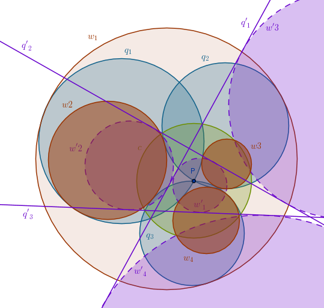 $$w'_1, w_1$$ $$w'_2, w_2$$ $$w'_3, w_3$$ $$w'_4, w_4$$
Problem 4
The Three-Circle Problem of Apollonius: construct all circles which are tangent to three given circles \(q_1(Q_1, R_1)\), \(q_2(Q_2, R_2)\) and \(q_3(Q_3, R_3)\)
The three-circle problem of Apollonius in general has eight solutions which can be grouped into three sets of circles. There are two circles in the first set - one that touches all three given circles internally and the other one that touches all three given circles externally.
The remaining two sets of solutions have three circles each. The circles in one solution set touch in turn each one of the given circles externally while touching the remaining two given circles internally. The circles in the other solution set touch in turn each one of the given circles internally while touching the remaining two given circles externally.
To obtain these solutions we will employ two main ideas. The first idea is to reduce this problem to an already solved one - Problem 2. The second idea is similar to the one used in constructing tangents common to two circles.
Without the loss of generality let us assume that:
$$R_1 \geqslant R_2$$so that when we say:
$$R_1 - R_2$$while constructing an external common tangent it makes geometric sense. The main idea here is to construct a helper circle with a radius equal to the difference between the larger and the smaller given radii and then construct a tangent \(t'\) to that circle through \(Q_2\) - the center of the circle with the smaller radius.
Once \(t'\) is available we can construct a straight line parallel to \(t'\) through \(T_1\) or we can construct a perpendicular to \(Ray(Q_1, T_1)\) through \(T_1\) or we can construct a straight line parallel to \(Ray(Q_1, T_1)\) through \(Q_2\) until it intersects \(q_2\) at \(T_2\) and then a \(Line(T_1, T_2)\) is the common external tangent sought after. The benefit of the latter approach is that the point \(T_2\) is constructed explicitly:
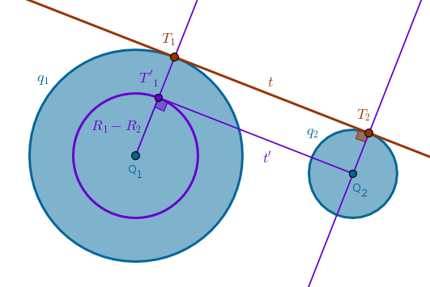1) \(Circle(Q_1, R_1 - R_2)\)
2) Tangent \(t'\) to \(Circle(Q_1, R_1 - R_2)\) through \(Q_2\) to locate \(T'_1\)
3) \(Ray(Q_1, T'_1)\) until it intersects \(q_1\) at \(T_1\)
4) Line through \(Q_2\) parallel to \(Ray(Q_1, T'_1)\) until it intersects \(q_2\) at \(T_2\)
5) \(Line(T_1, T_2)\) is the common tangent sought after
For brevity sake let us call the above an "\(R_1 - R_2\)" idea. The advantage of this idea over the center of similitude approach is that it works even if \(R_1 = R_2\).
To construct a common internal tangent construct a helper \(Circle(Q_1, R_1 + R_2)\) - an operation which we will call an "\(R_1 + R_2\)" idea for future reference:
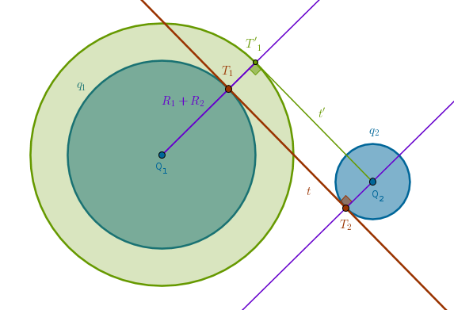Now let us go back to the problem of Apollonius. Let us first construct the two circles that touch all three given circles internally and externally.
To construct the circle that touches all three given circles internally we will use the external tangent common to two circles "\(R_1 - R_2\)" idea.
Without the loss of generality let us assume that we have sorted the given radii in such a way that, say, \(R_3\) is the smallest: \(R_1 \geqslant R_3\) and \(R_2 \geqslant R_3\). Construct two intermediate helper circles - \(k_1(Q_1, R_1 - R_3)\) and \(k_2(Q_2, R_2 - R_3)\).
Rephrase the Problem 2 as:
construct all circles which are tangent to two given circles \(k_1\) and \(k_2\) and pass through \(Q_3\)"
To solve this problem we invert the circles \(k_1\) and \(k_2\) with respect to \(c(Q_3, R)\) with positive power into the circles \(k'_1\) and \(k'_2\), construct two common external tangents to \(k'_1\) and \(k'_2\) - \(t_1\) and \(t_2\) - and invert them back with respect to \(c(Q_3, R)\) with positive power.
In the drawing below we have constructed and inverted \(t_1\) to obtain the circle \(w'_1(W_1, R'_{w1})\) which passes through \(Q_3\) and touches \(k_1\) and \(k_2\) internally:
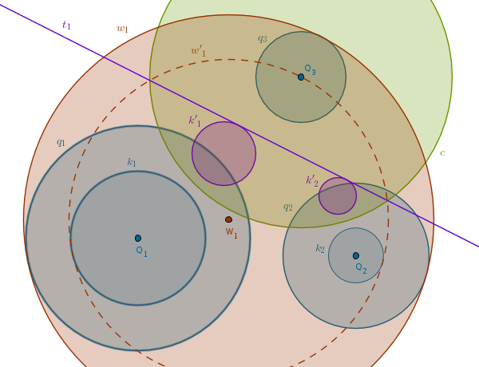We see that \(w'_1\) is almost exactly what we want - it is concentric with the target circle and its radius is by \(R_3\) smaller. We keep the center \(W_1\) where it is, increase \(R'_{w1}\) by \(R_3\) and we have the first solution circle \(w_1\) that touches all three given circles internally.
In the next drawing we have constructed and inverted \(t_2\) to obtain the circle \(w'_2(W_2, R'_{w2})\) which passes through \(Q_3\) and touches \(k_1\) and \(k_2\) externally. We keep \(W_2\) as a center where it is, decrease \(R'_{w2}\) by \(R_3\) and we have the second solution circle \(w_2\) that touches all three given circles externally:
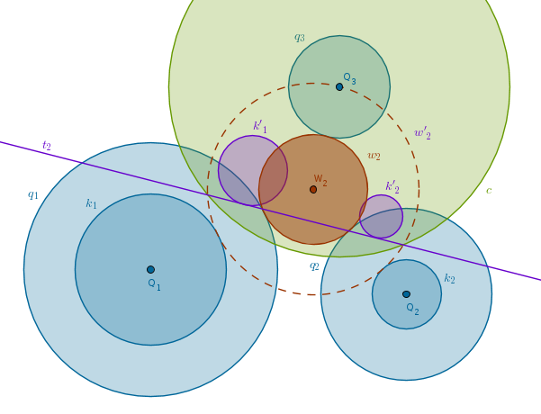To construct the remaining six circles we will use the internal tangent common to two circles "\(R_1 + R_2\)" idea. All these circles are constructed in the same way so we will cover just one set of two solution circles and you should be able to finish the rest yourself.
To make the sizes of the solution circles manageable we made the given circles a bit smaller this time.
Let us work with, say, \(q_1\). We shall construct one circle that touches \(q_1\) externally while touching \(q_2\) and \(q_3\) internally and one circle that touches \(q_1\) internally while touching \(q_2\) and \(q_3\) externally.
Construct the circles \(k_2(Q_2, R_2 + R_1)\) and \(k_3(Q_3, R_3 + R_1)\). Invert them with respect to \(c(Q_1, R)\) with positive power to obtain the circles \(k'_2\) and \(k'_3\). Construct two external tangents common to \(k'_2\) and \(k'_3\) - \(t_3\) and \(t_4\).
Invert \(t_3\) with respect to \(c(Q_1, R)\) with positive power to obtain the circle \(w'_3(W_3, R'_{w3})\) which passes through \(Q_1\) and touches \(k_2\) and \(k_3\) internally. Keep \(W_3\) as a center where it is, decrease \(R'_{w3}\) by \(R_1\) to obtain the circle \(w_3\) that touches \(q_1\) externally while touching \(q_2\) and \(q_3\) internally:
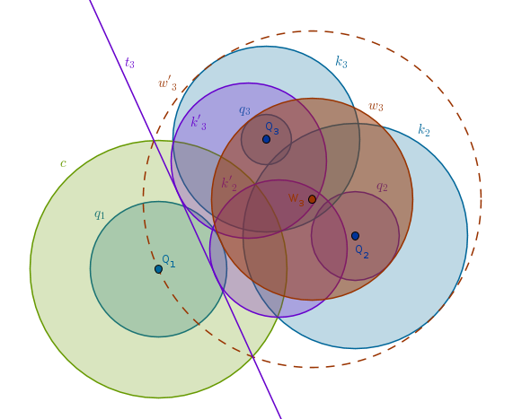Invert \(t_4\) with respect to \(c(Q_1, R)\) with positive power to obtain the circle \(w'_4(W_4, R'_{w4})\) which passes through \(Q_1\) and touches \(k_2\) and \(k_3\) externally. Keep \(W_4\) as a center where it is, increase \(R'_{w4}\) by \(R_1\) to obtain the circle \(w_4\) that touches \(q_1\) internally while touching \(q_2\) and \(q_3\) externally:
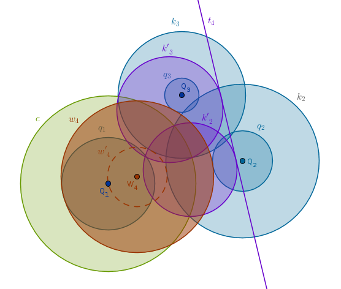That is two extra solution circles for a total of four. If we repeat the above process for the remaining two circles, \(q_2\) and \(q_3\), we will construct the remaining \(2 + 2 = 4\) circles for a total of eight.
\(\blacksquare\)